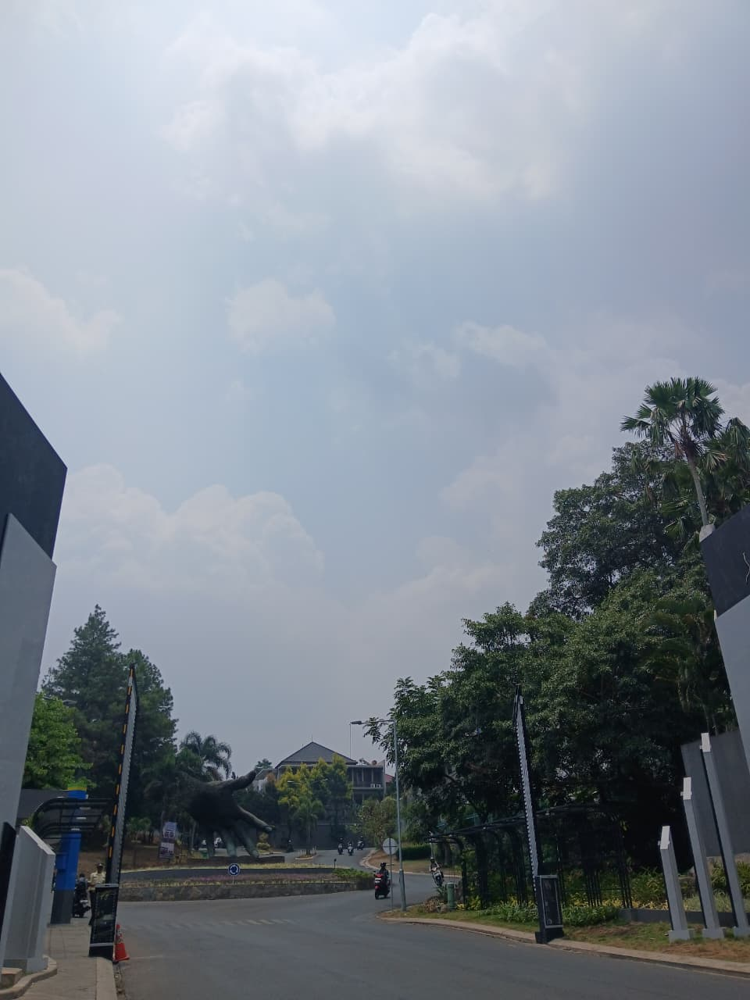
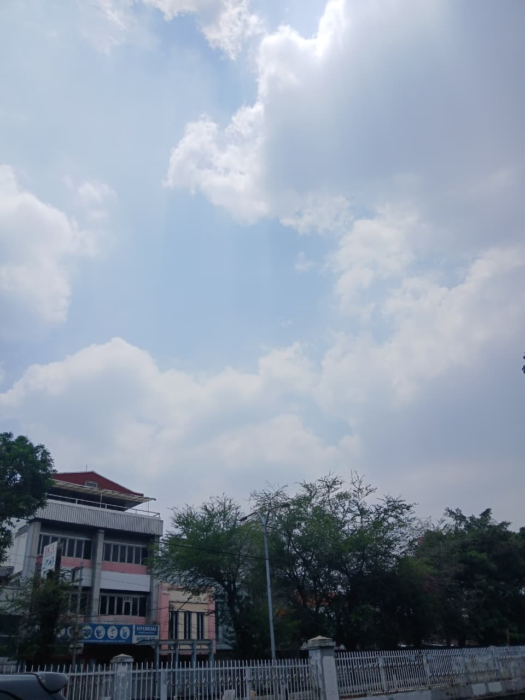
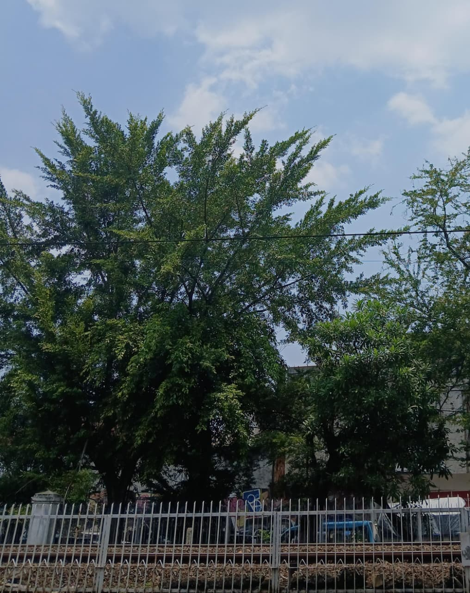
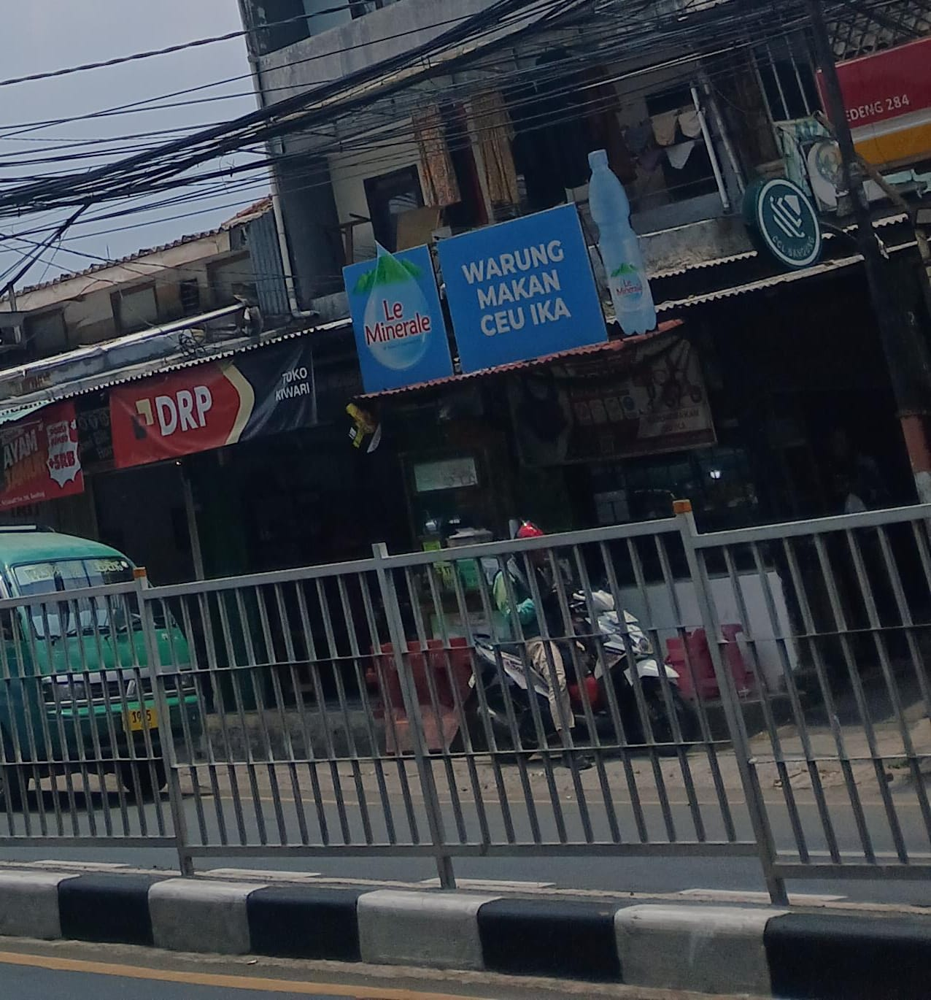
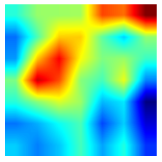

KATEGORI AQI TERPREDIKSI
Unhealthy
Estimasi kategori kualitas udara berdasarkan gambar.
Ambil foto atau pilih gambar lingkungan untuk melihat estimasi kategori AQI berbasis AI.
✓ Benar

Gambar benar 1
Gambar benar 2× Salah

Gambar salah 1
Gambar salah 2Ambil gambar dengan area langit minimal setengah dari seluruh foto.
JPG, PNG, atau WebP · Maksimal 10 MB
Estimasi model berdasarkan gambar yang kamu masukkan.
KATEGORI AQI TERPREDIKSI
Estimasi kategori kualitas udara berdasarkan gambar.
EXPLAINABLE AI
Grad-CAM membantu memvisualisasikan area gambar yang berkontribusi pada prediksi model.

Heatmap bukan peta konsentrasi polutan. Visualisasi ini menunjukkan area yang memengaruhi keputusan model.